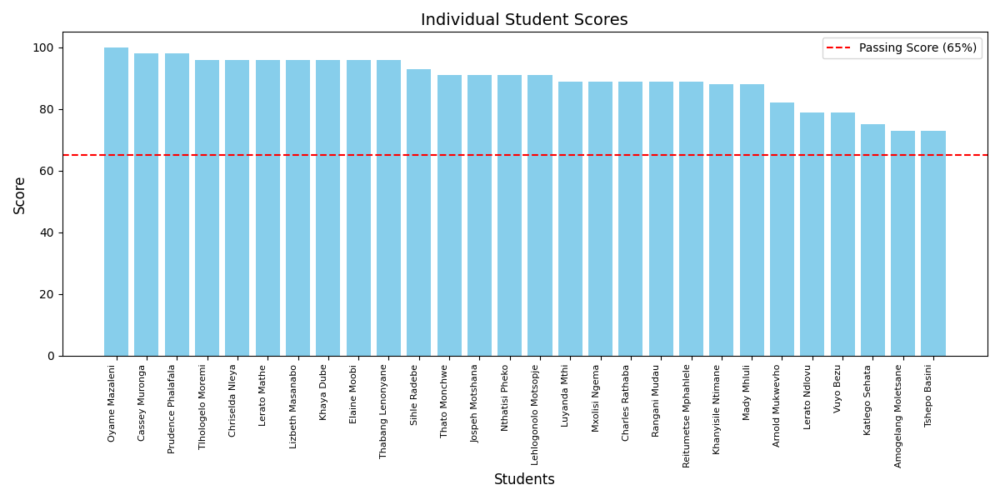
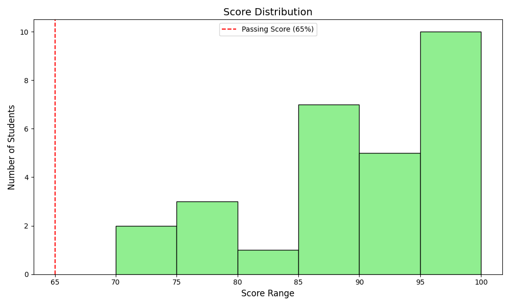
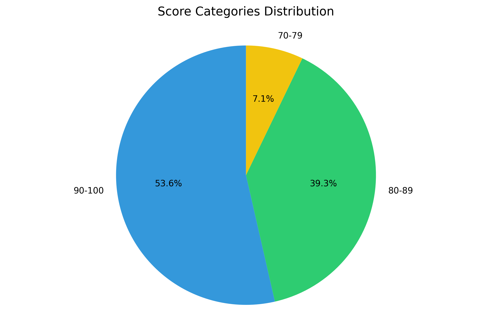
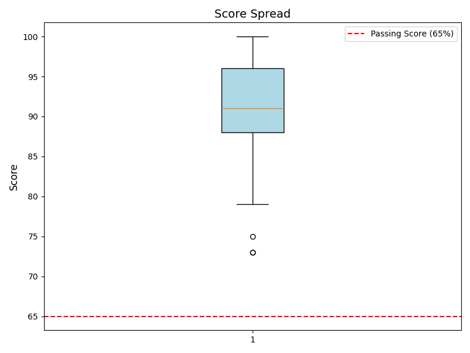

Performance Analysis of 28 Students
This report analyzes the performance of 28 students who took the Java Oracle Certified Associate 1Z0-800 Exam. The exam requires a minimum score of 65% to pass. Some students failed their first attempt, and while some retook the exam, others did not. Specifically, two students failed their second attempt, and three students did not retake the exam after failing the first attempt.
28
100%
89.71%
65%




The Java Oracle Certified Associate Exam results demonstrate exceptional performance across all students. With a 100% pass rate and an impressive average score of 89.71%, the cohort has shown remarkable proficiency in Java programming. The consistently high scores, with all students achieving well above the 65% passing threshold, reflect both the effectiveness of the preparation program and the dedication of the students. This outstanding achievement sets a strong foundation for their future advancement in Java development.